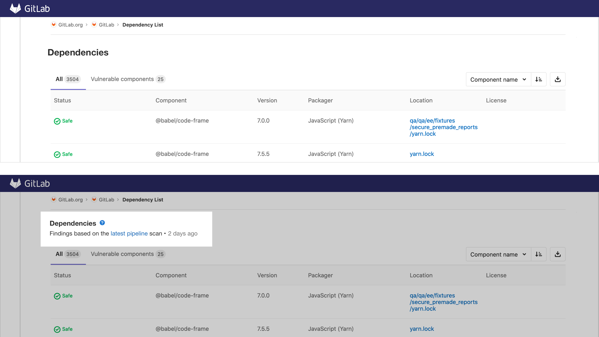
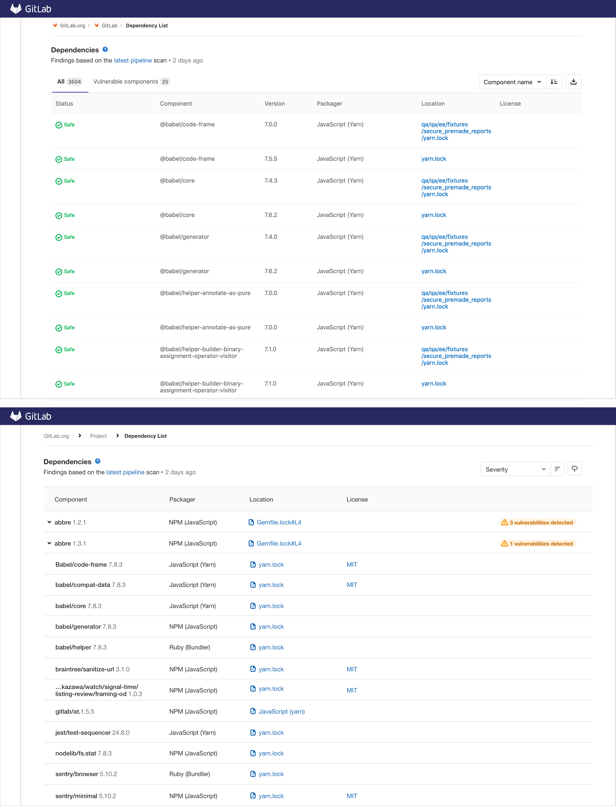

Thanks for visiting. Questions or thoughts? drop me a note.
See home page or view next case study: CrossLead.
Innovation by iteration
Iteration is how invention and innovation are achieved. Everything starts with a small step by a contributor, then another small step, then another, and continues to flourish and evolve in this way: one iteration at a time. The idea of the lone-wolf in the garage inventing the next world changing technology is a myth. Rather, correctly: the individual is attempting to contribute an innovation building on other's previous ideas, inventions, iterations, failures, and successes alike.
The past contributions of others, whether failed or successful, provide shared learnings for any future contribution to thrive from the bottom up. This is seen time-and-time again, to name a few examples: from a curious monk (Gregor Mendel) harvesting seeds in the mid-1800s which evolved today to the discipline of Genetics (and related technologies such as CRISPER), to the personal desktop computer and now iPhone, from closed source to open source to open-core software, to the internet started by the military then evolved by universities and corporations, then to the world wide web. All these examples have a familiar path and common denominator to innovation, which are: tinkering, trial-and-error, taking risks, learning-by-doing, failed attempts, collaborative partnerships, and continual iteration.
- Why continual iterations are imperative:
- Asymmetrical upsides: continual small iterations are low-cost experiments that migrate our hypothesis to real volatility (production), which provides a signal showing us it’s potential and/or flaws. Bottom line: optimize for delivery and be adaptable.
- Since we are often designing under opacity, tinkering and small experiments are an ideal offense to: uncertainty, improving decision making speed, and managing risk. The strategy promotes risk-taking in continual doses, which empowers us to move quickly, change course as needed, and open the door to potential upsides.
- The notable design tradeoff is: it's not always pretty and sometimes it’s glued together with bubble gum and duct tape. But having small experiments exist in the wild vs being discussed is 100% greater chance of potential: adoption, value, customer feedback.
- Common roadblocks to continual iteration:
- Grand solutions, the opposite of iterative solutions, the sort of arch-nemesis. These solutions block the shipping of iterative improvements because of the dependencies related to the large size and challenges getting planned. In these cases everything is slowed down and worst no value is delivered to customers. Instead, start by thinking big with a bias toward action: simplify and execute with continual steps.
- The law of triviality aka “the bike shed effect”: highlights the phenomenon of trivial issues receiving disproportionate attention vs big/complex issues. If small solutions fall under this spell, the iterative approach breaks.
- And of course: the elusive search for perfection. Nothing will be perfect: the needs of our customers continually change, therefore we must continue to adapt and innovate.
Iterations in action
Amongst my project's at GitLab one focus was on the dependency list and scanner feature which allows users to see a project’s dependencies, including any known vulnerabilities. The results are from the latest scan, from the analysis job in the pipeline that ran on the latest master branch. This information is sometimes referred to as a "Software Bill of Materials" and is designed for 1) software engineers, 2) security professional, 3) compliance and legal teams. Here are some of the problems I identified and iterative steps to improve:
- Problem to solve: The list of a components shown may not up-to-date: as it might not reflect the HEAD of the default branch. Users should be aware that they may be looking at an old, possibly outdated version of their project’s components. Also, it’s not explicit when and where the data is coming from.
Solution: include ? icon, which links to documentation for the user to learn more. The subtext frames the page, informing the user of the data displayed source, links to the pipeline page, and when it was last updated.
Validate: the messaging pattern aims to proactively inform the user about the UI content and how/when the data is displayed. To validate my hypothesis I tested with users, which was done in tandem with another test about configuration. We found that users understood the data source and found the time stamp helpful. This shared learning informed our decisions to leverage this solution for other areas: license compliance and dashboard. 
- Problem to solve: 1) at first glance, difficult to see any vulnerabilities; as they are secondary: hidden in time behind a tab, 2) status is confusing (and possibly not accurate?), 3) redundant `Safe`; takes a lot of space and is unclear communication.
Job-to-be-done, user task: "when my dependencies have reported vulnerabilities, I want to learn more about the vulnerability cause and implications, so I can make an informed decision on taking action on how to proceed".
Solution: i) removed vulnerability tab which was hiding the vulnerabilities in time, ii) Defaulted to severity sort order therefore showing vulnerabilities in space (not hidden behind tabs or pagination); making vulns prominent, iii) remove “safe”: only calling attention to at risk dependencies, iv) applied label to at-risk components (aligning with out-of-policy licenses), v) merged component name and version: tightens up space. 
- Problem to solve: when dependency scanning reports a vulnerability affecting a transient dependency, users don't know how this vulnerable and transient dependency relates to the dependencies they have declared in the project dependency file.
Solution: show the path between a vulnerable, transient dependency (listed in the generated lock file) and the top-level dependencies (from dependency file). - Problem to solve: the dependency list and license compliance are separate sections; displaying results from two different scanners. Creating a segmented experience; whereas they are closely related. The dependency list shows licenses and the license list shows dependencies; understanding how they related together is hard to achieve on separate UI sections. The user is forced to navigate from one list to the other (example: looking into related dependency for out-of-compliance license).
Solution: an information architecture revision: a component section as an umbrella for 1) dependencies, 2) related licenses, 3) policies. - Problem to solve: it is challenging to get direct and continual feedback from users in specific areas as we gradually roll out iterations. Further context: many of our customers are on premise, therefore the little product analytics that does exist would not be available. Consider when new updates are implemented: users will land on the page and likely have valuable thoughts, challenges, and/or suggestions to share.
Hypothesis: we have a unique ability here at GitLab, where we can direct the user to either create issues and/or contribute to an issue soliciting feedback. Display prompt for feedback on the dependency list and/or license compliance page. Stating "You may notice some gradual changes to the user interface. To help us improve the experience, please share your feedback on the recent updates."
Thinking: this is a low-cost experiment to drive feedback from users. Downside: no responses. Upside: an inexpensive, direct line to active users, encourage contributions, add potential research participants, and instant feedback to potential iterate on (partnering directly with the user). View prototype

 Dependency path: problem-solution walkthrough
Dependency path: problem-solution walkthrough


Experiment overview to solicit user feedback
Presentation: boring iterations and why they are so important
Dependency list current experience, improvements, and future steps